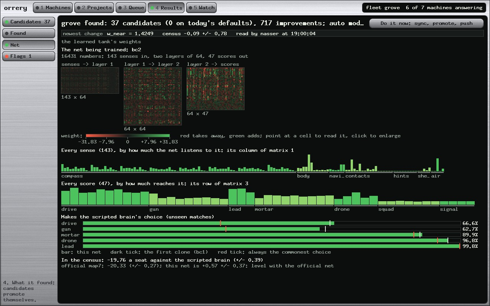
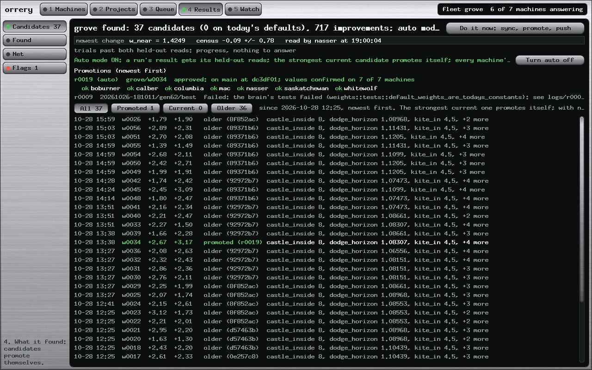
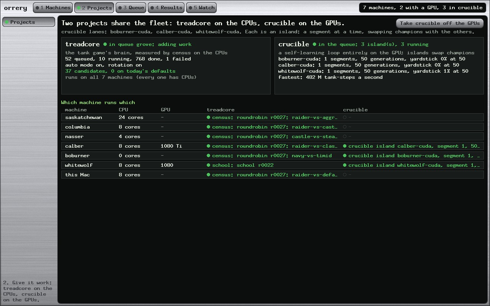

<title>Census to Commit</title>
<meta name="claude:viewport-fit-sides" content="cover">
<link rel="preconnect" href="https://fonts.googleapis.com">
<link rel="preconnect" href="https://fonts.gstatic.com" crossorigin>
<link rel="stylesheet" href="https://fonts.googleapis.com/css2?family=Chakra+Petch:wght@500;600;700&family=IBM+Plex+Sans:ital,wght@0,400;0,500;0,600;1,400&family=IBM+Plex+Mono:wght@400;500&display=swap">
<style>
/* Layout: one reading column of a lab notebook; data sits in black readouts set into steel, as treadcore's HUD does. */
:root {
  --paper: #eceff1;
  --sheet: #f7f8f9;
  --ink: #15191c;
  --mute: #56606a;
  --rule: #c8ced4;
  --steel: #9aa3ab;
  --readout: #0f1311;
  --readout-ink: #d6e4d1;
  --readout-dim: #7f8e84;
  --lamp: #3a9a4b;
  --warn: #a8701b;
  --alarm: #bf3f2b;
  --accent: #2d6a8a;
  --display: "Chakra Petch", "Bahnschrift", "DIN Alternate", sans-serif;
  --body: "IBM Plex Sans", "Helvetica Neue", Arial, sans-serif;
  --mono: "IBM Plex Mono", ui-monospace, "SF Mono", Menlo, monospace;
}
@media (prefers-color-scheme: dark) {
  :root:not([data-theme="light"]) {
    --paper: #111417; --sheet: #171b1f; --ink: #e3e7ea; --mute: #9aa4ad; --rule: #2c3238; --steel: #59626b;
    --readout: #090c0b; --readout-ink: #d6e4d1; --readout-dim: #74847a;
    --lamp: #5cc46c; --warn: #e0a548; --alarm: #ef6a50; --accent: #6eb0d2; color-scheme: dark;
  }
}
:root[data-theme="dark"] {
  --paper: #111417; --sheet: #171b1f; --ink: #e3e7ea; --mute: #9aa4ad; --rule: #2c3238; --steel: #59626b;
  --readout: #090c0b; --readout-ink: #d6e4d1; --readout-dim: #74847a;
  --lamp: #5cc46c; --warn: #e0a548; --alarm: #ef6a50; --accent: #6eb0d2; color-scheme: dark;
}
* { box-sizing: border-box; }
body {
  background: var(--paper); color: var(--ink); font: 400 16px/1.6 var(--body);
  padding-left: max(16px, env(safe-area-inset-left, 0px)); padding-right: max(16px, env(safe-area-inset-right, 0px));
  padding-block: 32px 64px;
}
main { max-width: 860px; margin: 0 auto; display: flex; flex-direction: column; gap: 28px; }
header.masthead { border-bottom: 3px solid var(--steel); padding-bottom: 18px; display: flex; flex-direction: column; gap: 8px; }
.eyebrow { font: 600 12px/1 var(--display); letter-spacing: .14em; text-transform: uppercase; color: var(--accent); }
h1 { font: 700 clamp(30px, 5vw, 46px)/1.05 var(--display); margin: 0; text-wrap: balance; letter-spacing: .01em; }
.byline { color: var(--mute); font-size: 14px; }
h2 { font: 600 24px/1.2 var(--display); margin: 8px 0 0; text-wrap: balance; display: flex; gap: 12px; align-items: baseline; }
h2 .sec { font: 500 14px/1 var(--mono); color: var(--steel); min-width: 2.4em; }
h3 { font: 600 17px/1.3 var(--display); margin: 6px 0 0; letter-spacing: .02em; }
section { display: flex; flex-direction: column; gap: 12px; }
p { margin: 0; max-width: 68ch; }
.abstract { background: var(--sheet); border: 1px solid var(--rule); padding: 18px 20px; display: flex; flex-direction: column; gap: 10px; }
.abstract p { max-width: none; }
blockquote { margin: 0; border-left: 3px solid var(--steel); padding: 4px 0 4px 16px; color: var(--mute); font-style: italic; max-width: 68ch; }
code, .m { font-family: var(--mono); font-size: .9em; }
.readout {
  background: var(--readout); color: var(--readout-ink); font: 400 13px/1.55 var(--mono);
  border-radius: 8px; padding: 14px 16px; overflow-x: auto; white-space: pre; border: 1px solid var(--steel);
  box-shadow: inset 0 3px 6px rgba(0,0,0,.45);
}
.readout .d { color: var(--readout-dim); }
.readout .g { color: #7fd38a; }
.readout .r { color: #f08a72; }
.readout .y { color: #e8c06a; }
figure { margin: 0; display: flex; flex-direction: column; gap: 8px; }
figcaption { font-size: 13.5px; color: var(--mute); max-width: 72ch; }
figcaption b { color: var(--ink); font-weight: 600; }
.diagram { overflow-x: auto; background: var(--sheet); border: 1px solid var(--rule); border-radius: 6px; padding: 12px; }
.diagram svg { display: block; min-width: 640px; width: 100%; height: auto; }
svg text { font-family: var(--body); }
svg .t { fill: var(--ink); font-size: 13px; }
svg .ts { fill: var(--mute); font-size: 11.5px; }
svg .tm { fill: var(--ink); font: 12px var(--mono); }
svg .tw { fill: var(--readout-ink); font: 12px var(--mono); }
svg .box { fill: var(--paper); stroke: var(--steel); stroke-width: 1.2; }
svg .boxa { fill: var(--readout); stroke: var(--steel); stroke-width: 1.2; }
svg .ln { stroke: var(--mute); stroke-width: 1.4; fill: none; }
svg .lnA { stroke: var(--accent); stroke-width: 1.6; fill: none; }
svg .lamp { fill: var(--lamp); }
svg .warn { fill: var(--warn); }
svg .alarm { fill: var(--alarm); }
svg .acc { fill: var(--accent); }
svg .steel { fill: var(--steel); }
table { border-collapse: collapse; width: 100%; font-size: 14px; }
.tablewrap { overflow-x: auto; }
th, td { text-align: left; padding: 6px 10px; border-bottom: 1px solid var(--rule); vertical-align: top; }
th { font: 600 12px/1.2 var(--display); letter-spacing: .08em; text-transform: uppercase; color: var(--mute); }
td.n { font-variant-numeric: tabular-nums; font-family: var(--mono); font-size: 13px; white-space: nowrap; }
.timeline { list-style: none; margin: 0; padding: 0; display: flex; flex-direction: column; }
.timeline li { display: grid; grid-template-columns: 76px 18px 1fr; gap: 10px; align-items: start; }
.timeline .when { font: 500 13px/1.6 var(--mono); color: var(--mute); text-align: right; font-variant-numeric: tabular-nums; }
.timeline .rail { position: relative; height: 100%; min-height: 44px; }
.timeline .rail::before { content: ""; position: absolute; left: 8px; top: 0; bottom: 0; width: 2px; background: var(--rule); }
.timeline .dot { position: absolute; left: 3px; top: 6px; width: 12px; height: 12px; border-radius: 50%; background: var(--lamp); border: 2px solid var(--paper); }
.timeline .dot.w { background: var(--warn); }
.timeline .dot.a { background: var(--accent); }
.timeline .what { padding-bottom: 14px; min-width: 0; }
.timeline .what b { font-weight: 600; }
.timeline .what span { color: var(--mute); font-size: 14px; display: block; }
.shot { position: relative; border-radius: 6px; overflow: hidden; border: 1px solid var(--steel); }
.shot img { display: block; width: 100%; height: auto; }
.pin { position: absolute; transform: translate(-50%, -50%); width: 26px; height: 26px; border-radius: 50%;
  background: var(--warn); color: #111; font: 700 13px/26px var(--display); text-align: center; box-shadow: 0 0 0 2px #111; }
.legend { margin: 0; padding: 0; list-style: none; counter-reset: k; display: grid; gap: 8px; }
.legend li { display: grid; grid-template-columns: 30px 1fr; gap: 8px; align-items: start; }
.legend .k { width: 24px; height: 24px; border-radius: 50%; background: var(--warn); color: #111; font: 700 12px/24px var(--display); text-align: center; }
.steps { margin: 0; padding: 0; list-style: none; counter-reset: s; display: flex; flex-direction: column; gap: 16px; }
.steps > li { counter-increment: s; display: grid; grid-template-columns: 34px 1fr; gap: 10px; min-width: 0; }
.steps > li::before { content: counter(s); font: 700 18px/1.3 var(--display); color: var(--accent); }
.steps > li > div { display: flex; flex-direction: column; gap: 8px; min-width: 0; }
.chips { display: flex; flex-wrap: wrap; gap: 6px; }
.chip { font: 500 12px/1 var(--mono); padding: 5px 8px; border-radius: 4px; background: var(--sheet); border: 1px solid var(--rule); }
.chip.g { border-color: var(--lamp); color: var(--lamp); }
.chip.o { border-color: var(--warn); color: var(--warn); }
.chip.r { border-color: var(--alarm); color: var(--alarm); }
.two { display: grid; grid-template-columns: 1fr 1fr; gap: 16px; }
.two > * { min-width: 0; }
@media (max-width: 640px) { .two { grid-template-columns: 1fr; } .timeline li { grid-template-columns: 60px 18px 1fr; } }
a { color: var(--accent); }
footer { border-top: 1px solid var(--rule); padding-top: 14px; color: var(--mute); font-size: 13px; }
</style>

<main>
<header class="masthead">
  <div class="eyebrow">Lab report · treadcore LR 124 · orrery · 28 October 2026</div>
  <h1>Census to Commit</h1>
  <div class="byline">How a coefficient the fleet discovers becomes a commit on main, a micro version, and the brain in the next download of treadcore. Paul Richeson; Claude Code (Claude Opus 5.5) as the pair.</div>
</header>

<div class="abstract">
  <div class="eyebrow">Abstract</div>
  <p>treadcore's bot has two brains. The <b>scripted brain</b> is code steered by 111 named numbers in one Rust table, <code>weights.rs</code>. The <b>learned net</b> is a file of 16,431 floats. The fleet improves the first without a person in the loop:</p>
  <ol>
    <li>A search proposes numbers.</li>
    <li>A census measures them against today's defaults.</li>
    <li>Two held-out censuses confirm them, and nine scenario families must hold their floors.</li>
    <li>orrery's auto mode edits <code>weights.rs</code>, runs the brain's tests on a branch, and pushes to main.</li>
  </ol>
  <p>From then on, every machine and every fresh clone builds the new defaults. This report follows the one promotion so far, <b>grove/w0034 → <code>dc3df01</code></b>, minute by minute. It shows how the brains are stored, down to the byte, and explains the Results tab. That covers why 36 candidates read "older", and why one task "failed".</p>
  <p>It also records what this step added:</p>
  <ul>
    <li>a micro-version tag on every promotion (<code>brain-r0019</code>);</li>
    <li>a <b>Do it now</b> button;</li>
    <li>re-reads of older candidates on today's defaults;</li>
    <li>a filtered, scrolling candidate list;</li>
    <li>a bar for every sense and score of the net;</li>
    <li>crucible, the GPU project, as a second job on three GPU lanes.</li>
  </ul>
</div>

<section>
  <h2><span class="sec">I</span>Introduction</h2>
  <blockquote>Create a learning loop and describe how the coefficients get commited back to treadcore, so the it picks it up in the AI. For example, show me commit versions, and timestamps. Actaully, show me hos the brainz and the net data are stored, show me the matrix for the AI. show me its composition, draw diagrams. we want to see the process of discovering a change, and promoting it, so push it on to the next download of treadcore. essentially creating micro versions of this git submission. its part of the program. it has a do it now button to sync and push the values.</blockquote>
  <blockquote>also describe the results tab. why do we have failed tasks in family. why are some older, when it says promoted. describe the layout. of what happends. perhaps add a scrollbar and a filter by type.</blockquote>
  <p>Paul Richeson, 28 October. Everything below was read from the repository, the queue's files and the fleet on that day. No number in it is illustrative.</p>
</section>

<section>
  <h2><span class="sec">II</span>Where the brains are stored</h2>
  <h3>A. The scripted brain: 111 named numbers in one table</h3>
  <p>The scripted brain decides with rules, and every number a rule weighs is one row of the <code>weights!</code> table in <code>source/treadcore-brain/src/weights.rs</code>. A row has three parts:</p>
  <ul>
    <li>a Rust name;</li>
    <li>the name a person types;</li>
    <li>the default, with a line saying what the number does.</li>
  </ul>
  <p>The macro turns the table into a flat array, <code>Weights</code>, which is lent to whatever scores and never copied per think. The defaults are compiled into every binary built from the commit: the game, the census, the fleet's jobs.</p>
  <figure>
    <div class="readout"><span class="d">// source/treadcore-brain/src/weights.rs, at dc3df01 (the promotion's lines)</span>
weights! {
    <span class="d">// Tactics: target selection (tactics.rs; the 22 weights and their scales).</span>
    Near "w_near" <span class="g">2.0</span>, "target: worth of nearness, w_near / (1 + d / near_scale)";
    NearScale "near_scale" 15.0, "target: the distance scale of nearness, tiles";
    InRange "w_in_range" <span class="g">1.4</span>, "target: in direct range now";
    KiteIn "kite_in" <span class="g">4.5</span>, "kite: the ring a step in ends on, tiles";
    PostureFortify "w_pos_fortify" <span class="g">6.0</span>, "posture: worth of Fortify's score, ...";
    DodgeHorizon "dodge_horizon" <span class="g">1.08307</span>, "dodge: seconds before a shell lands that the tank starts out ...";
    CastleInside "castle_inside" <span class="g">8.0</span>, "castle: pillboxes inside the wall, then it stops filling (rounded)";
    <span class="d">... 111 rows in all</span>
}</div>
    <figcaption><b>Figure 1.</b> The table is the scripted brain's whole adjustable surface. A promotion is an edit to the defaults in it, nothing else; the green numbers are the ones w0034 changed.</figcaption>
  </figure>
  <p>A trial does not edit the table. It is a small text file that names only the numbers it moves. The census passes it with <code>TRIAL=</code> (the game takes it with <code>--weights FILE</code>), and every number it doesn't name keeps the compiled default:</p>
  <div class="readout"><span class="d"># grove/w0034's trial: census +2.49 ± 0.94, held out +2.67 ± 0.27 and +3.17 ± 0.20</span>
w_near = 2
w_in_range = 1.4
kite_in = 4.5
w_pos_fortify = 6
dodge_horizon = 1.08307
castle_inside = 8
longshot_every = 2.5</div>

  <h3>B. The learned net: 65,752 bytes</h3>
  <p>The net that drives a learned tank is a file in <code>nets/</code>. Six are kept: <code>phase1</code>, <code>map4</code>, <code>map5</code>, <code>map7</code>, <code>map7a</code> and <code>bc1</code>/<code>bc2</code>. <code>map7</code> is the official one, and the official net changes only when Paul says. <code>bc2</code> is the one the Net page shows.</p>
  <p>The format is <code>TCNET1</code>, written by <code>Net::save</code> in <code>net.rs</code>:</p>
  <ul>
    <li>an 8-byte mark;</li>
    <li>the number of layer sizes, then the sizes;</li>
    <li>each layer's weights row by row (one row per output), then its biases;</li>
    <li>everything little-endian, as 32-bit integers and floats.</li>
  </ul>
  <figure>
    <div class="diagram">
      <svg viewBox="0 0 820 200" role="img" aria-label="Byte map of bc2.bin">
        <text class="t" x="0" y="16" font-weight="600">nets/bc2.bin, 65,752 bytes, drawn to scale</text>
        <!-- scale: 800 px = 65752 bytes -->
        <g transform="translate(0,34)">
          <rect x="0" y="0" width="0.34" height="46" class="alarm"/>
          <rect x="0.34" y="0" width="445.4" height="46" class="acc" opacity=".85"/>
          <rect x="445.74" y="0" width="3.11" height="46" class="warn"/>
          <rect x="448.85" y="0" width="199.3" height="46" class="acc" opacity=".6"/>
          <rect x="648.15" y="0" width="3.11" height="46" class="warn"/>
          <rect x="651.26" y="0" width="146.4" height="46" class="acc" opacity=".4"/>
          <rect x="797.66" y="0" width="2.29" height="46" class="warn"/>
          <text class="tw" x="12" y="28">W1  64 × 143 = 9,152 floats</text>
          <text class="tw" x="460" y="28">W2  64 × 64</text>
          <text class="tw" x="660" y="28">W3  47 × 64</text>
        </g>
        <g transform="translate(0,96)">
          <line class="ln" x1="1" y1="0" x2="1" y2="18"/>
          <text class="ts" x="6" y="14">header, 28 B: "TCNET1\0\0", 4, then 143 64 64 47</text>
          <line class="ln" x1="447" y1="0" x2="447" y2="40"/>
          <text class="ts" x="452" y="36">b1, 64 floats</text>
          <line class="ln" x1="650" y1="0" x2="650" y2="58"/>
          <text class="ts" x="655" y="54">b2, 64</text>
          <line class="ln" x1="799" y1="0" x2="799" y2="76"/>
          <text class="ts" x="733" y="74">b3, 47</text>
        </g>
        <text class="tm" x="0" y="190">28 + 4 × (9,152 + 64 + 4,096 + 64 + 3,008 + 47) = 28 + 4 × 16,431 = 65,752 bytes</text>
      </svg>
    </div>
    <figcaption><b>Figure 2.</b> The file is the matrices, laid end to end. The first eight bytes read <code>54 43 4e 45 54 31 00 00</code> ("TCNET1"), then <code>04 00 00 00</code> (four sizes), then <code>8f 00 00 00</code> (143), <code>40</code> (64), <code>40</code> (64) and <code>2f</code> (47). Those are the first 28 bytes of the real file.</figcaption>
  </figure>

  <h3>C. The net's composition, and what each matrix does</h3>
  <figure>
    <div class="diagram">
      <svg viewBox="0 0 820 420" role="img" aria-label="The net's layers, with the senses and the heads">
        <!-- inputs column: 143 senses, 2.4 px each -->
        <text class="t" x="0" y="16" font-weight="600">143 senses</text>
        <g transform="translate(0,28)">
          <rect x="0" y="0" width="150" height="211" class="box"/><text class="ts" x="8" y="18">compass 88</text><text class="ts" x="8" y="34">8 sectors × 11 channels:</text><text class="ts" x="8" y="48">hostile tank, allied tank,</text><text class="ts" x="8" y="62">pillboxes, depots, shell</text><text class="ts" x="8" y="76">coming, ground, cover, call</text>
          <rect x="0" y="211" width="150" height="29" class="box"/><text class="ts" x="8" y="230">body 12</text>
          <rect x="0" y="240" width="150" height="15" class="box"/><text class="ts" x="8" y="251">navigation 6</text>
          <rect x="0" y="255" width="150" height="43" class="box"/><text class="ts" x="8" y="274">contacts 18</text><text class="ts" x="8" y="289">enemy, take, home, call</text>
          <rect x="0" y="298" width="150" height="22" class="box"/><text class="ts" x="8" y="313">hints 9</text>
          <rect x="0" y="320" width="150" height="12" class="box"/><text class="ts" x="8" y="330">shells 5</text>
          <rect x="0" y="332" width="150" height="12" class="box"/><text class="ts" x="8" y="342">air 5</text>
        </g>
        <!-- arrows and matrices -->
        <g>
          <path class="lnA" d="M152 200 C200 200 210 200 250 200"/>
          <text class="tm" x="160" y="180">W1</text><text class="ts" x="160" y="222">9,152</text>
          <rect x="250" y="80" width="90" height="240" class="boxa"/><text class="tw" x="262" y="104">layer 1</text><text class="tw" x="262" y="124">64 units</text><text class="tw" x="262" y="300">max(0,·)</text>
          <path class="lnA" d="M342 200 L410 200"/>
          <text class="tm" x="356" y="180">W2</text><text class="ts" x="356" y="222">4,096</text>
          <rect x="410" y="80" width="90" height="240" class="boxa"/><text class="tw" x="422" y="104">layer 2</text><text class="tw" x="422" y="124">64 units</text><text class="tw" x="422" y="300">max(0,·)</text>
          <path class="lnA" d="M502 200 L570 200"/>
          <text class="tm" x="516" y="180">W3</text><text class="ts" x="516" y="222">3,008</text>
        </g>
        <!-- outputs: 47 scores, 6 px each -->
        <text class="t" x="570" y="16" font-weight="600">47 scores, by head</text>
        <g transform="translate(570,28)">
          <rect x="0" y="0" width="160" height="60" class="box"/><text class="ts" x="8" y="20">drive 10</text>
          <rect x="0" y="60" width="160" height="54" class="box"/><text class="ts" x="8" y="80">gun 9</text>
          <rect x="0" y="114" width="160" height="18" class="box"/><text class="ts" x="8" y="127">lead 3</text>
          <rect x="0" y="132" width="160" height="54" class="box"/><text class="ts" x="8" y="152">mortar 9</text>
          <rect x="0" y="186" width="160" height="30" class="box"/><text class="ts" x="8" y="205">drone 5</text>
          <rect x="0" y="216" width="160" height="42" class="box"/><text class="ts" x="8" y="236">squad 7</text>
          <rect x="0" y="258" width="160" height="24" class="box"/><text class="ts" x="8" y="274">signal 4</text>
        </g>
        <text class="ts" x="740" y="140">highest</text><text class="ts" x="740" y="155">in each</text><text class="ts" x="740" y="170">head is</text><text class="ts" x="740" y="185">the act</text>
        <text class="tm" x="0" y="398">scores = W3 · max(0, W2 · max(0, W1 · senses + b1) + b2) + b3</text>
        <text class="ts" x="0" y="416">16,431 numbers: 9,152 + 64 + 4,096 + 64 + 3,008 + 47</text>
      </svg>
    </div>
    <figcaption><b>Figure 3.</b> <b>One think.</b>
      <ul>
        <li><b>The senses:</b> 143 numbers from 0 to 1 (bearings as a sine and a cosine, −1 to 1), from <code>senses.rs</code>.</li>
        <li><b>Matrix 1</b> (64 rows by 143 columns): each of layer 1's 64 units weighs every sense, adds its bias and bends the sum at zero. Column <i>i</i> of matrix 1 is everything sense <i>i</i> says to the net.</li>
        <li><b>Matrix 2</b> mixes those 64 into 64 more.</li>
        <li><b>Matrix 3</b> (47 rows by 64 columns): each row makes one score. Row <i>o</i> of matrix 3 is everything that reaches score <i>o</i>.</li>
        <li><b>The heads</b> split the 47 scores into seven choices, and in each head the highest score is what the tank does.</li>
      </ul>
    </figcaption>
  </figure>
  <figure>
    <div class="shot"></div>
    <figcaption><b>Figure 4.</b> <b>The same net in orrery</b> (Results → Net).
      <ul>
        <li><b>Heat maps:</b> the three matrices, green adding and red taking away.</li>
        <li><b>Every sense</b> (new): a bar for each of the 143, the size of its column of matrix 1, grouped compass, body, navigation, contacts, hints, shells, air.</li>
        <li><b>Every score</b> (new): a bar for each of the 47, the size of its row of matrix 3, grouped by head.</li>
        <li><b>Hover:</b> pointing at a bar names it (for example <i>compass 2 (right): shell coming</i>), says how it is transformed on its way, and marks its column or row on the matrix above.</li>
        <li><b>Accuracy:</b> the last block is how often the net makes the scripted brain's choice on matches it never saw. bc2: drive 66.6%, gun 62.7%, mortar 89.9%, drone 96.8%, lead 99.8%, against 36.5%, 37.9%, 87.7%, 94.0% and 99.8% for always picking the commonest choice.</li>
      </ul>
    </figcaption>
  </figure>
</section>

<section>
  <h2><span class="sec">III</span>The learning loop</h2>
  <p>The scripted brain's numbers improve in a loop that closes itself in auto mode. Each box below is a kind of job in grove's queue, and every arrow is a file the next step reads.</p>
  <figure>
    <div class="diagram">
      <svg viewBox="0 0 820 560" role="img" aria-label="The loop from a search to a commit on main">
        <defs><marker id="ah" viewBox="0 0 10 10" refX="9" refY="5" markerWidth="7" markerHeight="7" orient="auto-start-reverse"><path d="M0,0 L10,5 L0,10 z" class="steel"/></marker></defs>
        <g class="station">
          <rect class="box" x="20" y="20" width="240" height="70" rx="6"/>
          <text class="t" x="34" y="44" font-weight="600">1 · Search</text>
          <text class="ts" x="34" y="62">spsa, tune, suggest.py over the</text>
          <text class="ts" x="34" y="78">fleet's ledger (4,230 censuses)</text>
        </g>
        <g><rect class="box" x="290" y="20" width="240" height="70" rx="6"/>
          <text class="t" x="304" y="44" font-weight="600">2 · Trial census</text>
          <text class="ts" x="304" y="62">55 seeds, 900 s, every map,</text>
          <text class="ts" x="304" y="78">against today's defaults</text></g>
        <g><rect class="box" x="560" y="20" width="240" height="70" rx="6"/>
          <text class="t" x="574" y="44" font-weight="600">3 · Two held-out reads</text>
          <text class="ts" x="574" y="62">400 fresh seeds each; both past</text>
          <text class="ts" x="574" y="78">two standard errors</text></g>
        <g><rect class="box" x="560" y="140" width="240" height="70" rx="6"/>
          <text class="t" x="574" y="164" font-weight="600">4 · Candidate</text>
          <text class="ts" x="574" y="182">current if all three reads ran on</text>
          <text class="ts" x="574" y="198">today's weights.rs; else older</text></g>
        <g><rect class="box" x="290" y="140" width="240" height="70" rx="6"/>
          <text class="t" x="304" y="164" font-weight="600">5 · Families</text>
          <text class="ts" x="304" y="182">nine scenario families, each</text>
          <text class="ts" x="304" y="198">held to its floor (85 of 85 hold)</text></g>
        <g><rect class="box" x="20" y="140" width="240" height="70" rx="6"/>
          <text class="t" x="34" y="164" font-weight="600">6 · Promote (auto)</text>
          <text class="ts" x="34" y="182">the strongest current candidate;</text>
          <text class="ts" x="34" y="198">a run, rNNNN, asked by auto mode</text></g>
        <g><rect class="boxa" x="20" y="260" width="240" height="92" rx="6"/>
          <text class="tw" x="34" y="284">7 · Branch promote/grove-rNNNN</text>
          <text class="tw" x="34" y="304">edit weights.rs defaults</text>
          <text class="tw" x="34" y="322">cargo test -p treadcore-brain</text>
          <text class="tw" x="34" y="340">every_family_holds_its_floor</text></g>
        <g><rect class="boxa" x="290" y="260" width="240" height="92" rx="6"/>
          <text class="tw" x="304" y="284">8 · Approve: push to main</text>
          <text class="tw" x="304" y="304">fast-forward, or replayed if</text>
          <text class="tw" x="304" y="322">only records moved on main</text>
          <text class="tw" x="304" y="340">tag brain-rNNNN (new)</text></g>
        <g><rect class="boxa" x="560" y="260" width="240" height="92" rx="6"/>
          <text class="tw" x="574" y="284">9 · Every machine builds it</text>
          <text class="tw" x="574" y="304">prep job per host: worktree,</text>
          <text class="tw" x="574" y="322">census binary, defaults.toml</text>
          <text class="tw" x="574" y="340">fetched back as proof</text></g>
        <g><rect class="box" x="560" y="400" width="240" height="70" rx="6"/>
          <text class="t" x="574" y="424" font-weight="600">10 · Propagation</text>
          <text class="ts" x="574" y="442">each machine's defaults compared</text>
          <text class="ts" x="574" y="458">with the promoted values: 7 of 7</text></g>
        <g><rect class="box" x="290" y="400" width="240" height="70" rx="6"/>
          <text class="t" x="304" y="424" font-weight="600">11 · Re-read the older (new)</text>
          <text class="ts" x="304" y="442">the 3 strongest older candidates,</text>
          <text class="ts" x="304" y="458">measured again on the new defaults</text></g>
        <g><rect class="box" x="20" y="400" width="240" height="70" rx="6"/>
          <text class="t" x="34" y="424" font-weight="600">Next download</text>
          <text class="ts" x="34" y="442">git clone, make: the brain plays</text>
          <text class="ts" x="34" y="458">with main's defaults</text></g>
        <path class="ln" marker-end="url(#ah)" d="M262 55 L286 55"/>
        <path class="ln" marker-end="url(#ah)" d="M532 55 L556 55"/>
        <path class="ln" marker-end="url(#ah)" d="M680 92 L680 136"/>
        <path class="ln" marker-end="url(#ah)" d="M558 175 L534 175"/>
        <path class="ln" marker-end="url(#ah)" d="M288 175 L264 175"/>
        <path class="ln" marker-end="url(#ah)" d="M140 212 L140 256"/>
        <path class="ln" marker-end="url(#ah)" d="M262 306 L286 306"/>
        <path class="ln" marker-end="url(#ah)" d="M532 306 L556 306"/>
        <path class="ln" marker-end="url(#ah)" d="M680 354 L680 396"/>
        <path class="ln" marker-end="url(#ah)" d="M558 435 L534 435"/>
        <path class="ln" marker-end="url(#ah)" d="M410 398 C410 380 420 120 410 94"/>
        <path class="lnA" marker-end="url(#ah)" d="M410 354 C380 380 200 380 140 396"/>
        <text class="ts" x="420" y="236">a re-read is a new trial: back to 2</text>
        <text class="ts" x="140" y="510">main is what every clone gets; a v* tag packages a release (GitHub Actions), only when Paul asks</text>
        <text class="ts" x="140" y="528">a brain-rNNNN tag marks each promotion: a micro version, which starts no workflow</text>
      </svg>
    </div>
    <figcaption><b>Figure 5.</b> The loop.
      <ul>
        <li><b>Boxes 1–6</b> run as ordinary jobs on whichever CPU lane is free.</li>
        <li><b>Box 7</b> runs on the Mac, in a worktree of its own.</li>
        <li><b>Box 8</b> is the only step that changes what anyone downloads.</li>
        <li><b>Box 11</b> and the tag in box 8 are this step's additions.</li>
      </ul>
    </figcaption>
  </figure>

  <h3>The rule a candidate must pass</h3>
  <div class="tablewrap"><table>
    <thead><tr><th>Read</th><th>Seeds</th><th>Bar</th><th>w0034</th></tr></thead>
    <tbody>
      <tr><td>Trial census, every map, 900 s</td><td class="n">55</td><td>past two standard errors above the defaults; no map past two below</td><td class="n">+2.49 ± 0.94</td></tr>
      <tr><td>Held-out read 1</td><td class="n">400</td><td>past two standard errors again, seeds never searched on</td><td class="n">+2.67 ± 0.27</td></tr>
      <tr><td>Held-out read 2</td><td class="n">400</td><td>the same, other seeds</td><td class="n">+3.17 ± 0.20</td></tr>
      <tr><td>Families</td><td class="n">400–1,000 a family</td><td>each of nine families at or above its floor</td><td>holds</td></tr>
      <tr><td>The brain's tests</td><td class="n">—</td><td>109 pass on the promotion branch</td><td>pass</td></tr>
    </tbody>
  </table></div>
</section>

<section>
  <h2><span class="sec">IV</span>One promotion, minute by minute</h2>
  <p>grove/w0034 is the only candidate promoted so far. These are its times from the queue's run files and from git, Pacific time, 28 October 2026.</p>
  <ol class="timeline">
    <li><div class="when">13:38</div><div class="rail"><div class="dot a"></div></div><div class="what"><b>w0034 passes both held-out reads</b><span>a candidate: +2.67 and +3.17. Its census and reads ran on commit 92972b7.</span></div></li>
    <li><div class="when">14:14:02</div><div class="rail"><div class="dot"></div></div><div class="what"><b>Auto mode asks for run r0019</b><span>promote grove/w0034: the strongest current candidate whose families hold.</span></div></li>
    <li><div class="when">14:20:54</div><div class="rail"><div class="dot"></div></div><div class="what"><b>Commit dc3df01 on promote/grove-r0019</b><span>weights.rs edited (7 lines); 109 tests and every family pass on the branch. The commit message carries the evidence.</span></div></li>
    <li><div class="when">14:28:08</div><div class="rail"><div class="dot"></div></div><div class="what"><b>Approved: pushed to main</b><span>auto mode approves its own prepared promotion; main is dc3df01. From here a clone gets the new brain.</span></div></li>
    <li><div class="when">14:30</div><div class="rail"><div class="dot a"></div></div><div class="what"><b>LR 119 recorded on top: c1e00c0</b><span>the records commit; it moves no brain source, so the defaults stay dc3df01's.</span></div></li>
    <li><div class="when">16:05:21</div><div class="rail"><div class="dot"></div></div><div class="what"><b>Confirmed on 7 of 7 machines</b><span>each machine built a commit since the approval and its defaults.toml has the promoted values (whitewolf by c1e00c0, the rest by dc3df01).</span></div></li>
    <li><div class="when">19:09:33</div><div class="rail"><div class="dot w"></div></div><div class="what"><b>Tag brain-r0019 pushed</b><span>the micro version, made for r0019 after the fact (tag object c066c65, signed); every promotion from now on is tagged as it is approved.</span></div></li>
  </ol>
  <figure>
    <div class="readout"><span class="d">$ git show --stat dc3df01</span>
commit <span class="y">dc3df0196d0a1ba8076f66592f88d60a940a3cb2</span>
Author: Paul Richeson &lt;paulr@sdf.org&gt;
Date:   Wed Oct 28 14:20:54 2026 -0700

    promote grove/w0034 as the brain's defaults -- w_near 1.0 -&gt; 2.0; w_in_range 0.7 -&gt; 1.4;
    kite_in 9.0 -&gt; 4.5; w_pos_fortify 3.0 -&gt; 6.0; dodge_horizon 2.0 -&gt; 1.08307; castle_inside
    4.0 -&gt; 8.0; longshot_every 5.0 -&gt; 2.5; ... census +2.49 +/- 0.94, held out +2.67 +/- 0.27 and
    +3.17 +/- 0.20; families holds; prepared by orrery (queue grove, run r0019), approved by
    orrery's auto mode (Paul, 28 October)

 source/treadcore-brain/src/weights.rs | 14 <span class="g">+++++++</span><span class="r">-------</span>

<span class="d">$ git describe --tags --match 'brain-*' origin/main</span>
<span class="g">brain-r0019-5-g19638a5</span>      <span class="d"># main is 5 commits past the micro version: records only</span></div>
    <figcaption><b>Figure 6.</b> The promotion as git records it. A micro version is the commit, its tag and its message. They say which numbers changed, by how much, on what evidence, and which run made it. <code>git describe</code> names the brain any checkout plays: the last <code>brain-</code> tag, and how far past it.</figcaption>
  </figure>
  <figure>
    <div class="diagram">
      <svg viewBox="0 0 820 300" role="img" aria-label="main's history around the promotion">
        <line class="ln" x1="40" y1="20" x2="40" y2="290"/>
        <g font-size="12">
          <circle cx="40" cy="30" r="6" class="steel"/><text class="tm" x="60" y="34">19638a5</text><text class="ts" x="130" y="34">18:38  LR 123: orrery's story</text>
          <circle cx="40" cy="62" r="6" class="steel"/><text class="tm" x="60" y="66">8df8ab1</text><text class="ts" x="130" y="66">18:22  LR 122: brushed metal</text>
          <circle cx="40" cy="94" r="6" class="steel"/><text class="tm" x="60" y="98">ebb2bb9</text><text class="ts" x="130" y="98">17:47  LR 121: crucible</text>
          <circle cx="40" cy="126" r="6" class="steel"/><text class="tm" x="60" y="130">c29a2ed</text><text class="ts" x="130" y="130">15:13  LR 120: the Machines view</text>
          <circle cx="40" cy="158" r="6" class="steel"/><text class="tm" x="60" y="162">c1e00c0</text><text class="ts" x="130" y="162">14:30  LR 119: the first auto promotion</text>
          <circle cx="40" cy="198" r="9" class="lamp"/><text class="tm" x="60" y="202" font-weight="600">dc3df01</text><text class="t" x="130" y="202">14:20  promote grove/w0034 as the brain's defaults</text>
          <rect x="520" y="186" width="118" height="24" rx="12" class="warn"/><text x="534" y="203" style="fill:#111;font:600 12px var(--mono)">brain-r0019</text>
          <circle cx="40" cy="238" r="6" class="steel"/><text class="tm" x="60" y="242">bd31f8f</text><text class="ts" x="130" y="242">14:16  LR 118: auto mode</text>
          <circle cx="40" cy="270" r="6" class="steel"/><text class="tm" x="60" y="274">9c9abc1</text><text class="ts" x="130" y="274">14:03  reports: the AppKit lab report</text>
        </g>
      </svg>
    </div>
    <figcaption><b>Figure 7.</b> main, newest at the top. Only the green commit changed the brain; the others are records and reports. The brain any of them builds is brain-r0019's.</figcaption>
  </figure>
</section>

<section>
  <h2><span class="sec">V</span>The Results tab</h2>
  <figure>
    <div class="shot">
      
      <div class="pin" style="left:32%;top:2.5%">1</div>
      <div class="pin" style="left:6%;top:7.2%">2</div>
      <div class="pin" style="left:76%;top:7.6%">3</div>
      <div class="pin" style="left:64%;top:11%">4</div>
      <div class="pin" style="left:86%;top:16.3%">5</div>
      <div class="pin" style="left:64%;top:21.5%">6</div>
      <div class="pin" style="left:44%;top:29.2%">7</div>
      <div class="pin" style="left:96%;top:52%">8</div>
    </div>
    <figcaption><b>Figure 8.</b> Results → Candidates, at the time of writing. The numbers refer to the key below.</figcaption>
  </figure>
  <ol class="legend">
    <li><span class="k">1</span><div><b>The chapters.</b> Results is chapter 4 of five. Machines adds a computer, Projects gives it work, Queue runs it, Results reads what it found, and Watch looks in.</div></li>
    <li><span class="k">2</span><div><b>The pages.</b> Candidates (with its count), Found (improvements by variable and machine), Net (Figure 4) and Flags (what waits for a person). A green lamp means there is something new; a red lamp on Flags means something needs answering.</div></li>
    <li><span class="k">3</span><div><b>The headline, and Do it now</b> (new). Press it twice. It syncs every machine's ledger, then promotes the strongest current candidate; auto mode pushes the promotion to main and tags it once its tests and families pass. With no current candidate, it re-reads the strongest older ones instead. The menu bar has it too: Fleet → Do It Now, which arrives armed.</div></li>
    <li><span class="k">4</span><div><b>The newest change</b> any census reported: the coefficient, its value, its offset from the default, the census, and the machine that read it.</div></li>
    <li><span class="k">5</span><div><b>Auto mode</b> and its switch. With auto on, nothing on this page waits for a person.</div></li>
    <li><span class="k">6</span><div><b>Promotions,</b> newest first. Under the newest approved one is each machine's confirmation (<code>ok</code>: its build has the values). r0009 is grey, not red: it failed before r0019 landed, and it is marked superseded.</div></li>
    <li><span class="k">7</span><div><b>The filter</b> (new): All, Promoted, Current and Older, each with its count.</div></li>
    <li><span class="k">8</span><div><b>The list and its scroll bar</b> (new): the wheel, or drag the bar. Each line shows when, the trial, its two held-out reads, its standing, and what it moves.</div></li>
  </ol>

  <h3>Why 36 candidates say "older" while one says "promoted"</h3>
  <p>A census measures a trial <i>against the defaults of its day</i>: +2.67 means w0034 beat the brain of commit 92972b7. When w0034 was promoted, the defaults became w0034's own numbers. Every other candidate's evidence then describes a race against a brain the game no longer has.</p>
  <ul>
    <li>Most of them share most of w0034's values: every one of the 37 sets <code>castle_inside 8</code> and <code>kite_in 4.5</code>.</li>
    <li>Their lead over the old defaults says nothing about a lead over the new ones.</li>
    <li>Promoting one on that evidence could undo a gain.</li>
  </ul>
  <p>So the page labels each with the commit it was read at, <code>older (89371b6)</code>, and auto mode promotes only a <b>current</b> candidate. Before this step, nothing turned an older candidate current. The loop stood still at "0 current", and Do it now would have had nothing to push.</p>
  <p><b>Box 11 of Figure 5</b> is the fix. With none current, auto mode re-reads the three strongest older candidates on today's defaults. Each is a new trial with its own census and two held-out reads, and one that still wins becomes current and promotes itself. The first round started at 19:11: w0045 (held out +2.45 and +3.09) and w0003 (+2.50 and +2.80). It also re-read w0034 against its own values. That is wasted work, kept as a control: it should read near zero. Promoted candidates are now excluded.</p>

  <h3>Why "failed tasks in family"</h3>
  <p>No family failed: grove has read 85 candidate-and-family sets, and all 85 hold. The one failed job in the queue is <b>r0009</b>, a promotion, at 10:12 that morning. Its message said "the tests or a family failed", which pointed at the families. Its log says otherwise:</p>
  <div class="readout">---- weights::tests::default_weights_are_todays_constants stdout ----
assertion `left == right` failed: the weights at their defaults are the Tactics of 17 October
  left:  "Tactics { w_near: <span class="r">2.0</span>, ... w_in_range: <span class="r">1.4</span>, ...
  right: "Tactics { w_near: <span class="g">1.0</span>, ... w_in_range: <span class="g">0.7</span>, ...
test result: FAILED. 108 passed; 1 failed; 14 ignored</div>
  <p>r0009 changed the table's defaults but not <code>Tactics::default()</code>, which a test holds equal to them. LR 119 fixed the promotion step to change both (<code>changed_vars</code>), and r0019 passed with 109 tests four hours later. A failed promotion now names the step that failed, read from its log:</p>
  <div class="readout"><span class="d">$ python3 -I tools/plans/treadcore.py build/queue/grove why r0009</span>
the brain's tests failed (weights::tests::default_weights_are_todays_constants): see logs/r0009-promote.log</div>
</section>

<section>
  <h2><span class="sec">VI</span>The second job: crucible on the GPUs</h2>
  <div class="two">
    <figure>
      <div class="shot"></div>
      <figcaption><b>Figure 9.</b> Projects, with crucible in the queue.</figcaption>
    </figure>
    <div style="display:flex;flex-direction:column;gap:10px">
      <p><b>Add the GPUs to crucible</b> (Projects, two presses) gives every machine with a card and CUDA a second lane, <code>NAME-cuda</code>. It is the same machine again, taking only crucible's work, so its CPUs go on with treadcore's censuses.</p>
      <p>Each lane is an island:</p>
      <ul>
        <li>its own population, trained 500 generations a segment, its state kept on the card's machine;</li>
        <li>six segments queued ahead, each after the last, so the card is not left idle between plans;</li>
        <li>each segment sends back its champion (8.6 KB) and takes the other islands' champions into its hall of fame.</li>
      </ul>
      <div class="chips"><span class="chip g">calber-cuda · 1080 Ti</span><span class="chip g">whitewolf-cuda · 1080</span><span class="chip g">boburner-cuda · 1070 Ti</span></div>
      <p>crucible trains its own arena, not treadcore's brain. It reaches treadcore's candidates only through a GPU arena built from treadcore's combat rules (LR 121 D). That is the next step if Paul wants it.</p>
    </div>
  </div>
</section>

<section>
  <h2><span class="sec">VII</span>Tutorial: following a change by hand</h2>
  <ol class="steps">
    <li><div><b>See what the fleet is doing.</b>
      <div class="readout">python3 ~/code/orrery/tools/fleet-queue.py build/queue/grove status</div></div></li>
    <li><div><b>Read every candidate's evidence</b>, strongest first, with its standing:
      <div class="readout">python3 -I ~/code/orrery/tools/plans/treadcore.py build/queue/grove evidence
<span class="d">grove/w0045   held +2.45 +3.09  families holds     older defaults
grove/w0003   held +2.50 +2.80  families holds     older defaults</span></div></div></li>
    <li><div><b>Try a candidate's numbers yourself.</b> Write them as a trial file and play a census, or the game, with them:
      <div class="readout">printf 'w_near = 2\nkite_in = 4.5\n' &gt; my.weights
TRIAL=my.weights SEEDS=55 scripts/census.sh</div></div></li>
    <li><div><b>Do it now</b>, from orrery (Results, two presses) or the command line:
      <div class="readout">python3 ~/code/orrery/tools/fleet-queue.py build/queue/grove now
<span class="d">no candidate on today's defaults (19638a5) to promote; read again: ...</span></div></div></li>
    <li><div><b>Find the micro versions</b> and the brain your checkout plays:
      <div class="readout">git tag -l 'brain-*'
git show brain-r0019
git describe --tags --match 'brain-*'</div></div></li>
    <li><div><b>Read a net's matrices</b> in a few lines of Python:
      <div class="readout">import struct
b = open("nets/bc2.bin", "rb").read()
assert b[:8] == b"TCNET1\0\0"
k = struct.unpack_from("&lt;I", b, 8)[0]
sizes = struct.unpack_from(f"&lt;{k}I", b, 12)            <span class="d"># (143, 64, 64, 47)</span>
off = 12 + 4 * k
for a, o in zip(sizes, sizes[1:]):
    W = struct.unpack_from(f"&lt;{a*o}f", b, off); off += 4 * a * o   <span class="d"># o rows of a</span>
    bias = struct.unpack_from(f"&lt;{o}f", b, off); off += 4 * o</div></div></li>
    <li><div><b>Give the GPUs to crucible</b>, or take them back:
      <div class="readout">python3 ~/code/orrery/tools/machines.py build/queue/grove cuda-lanes add all
python3 ~/code/orrery/tools/machines.py build/queue/grove cuda-lanes remove all</div></div></li>
  </ol>
</section>

<section>
  <h2><span class="sec">VIII</span>Results and discussion</h2>
  <div class="tablewrap"><table>
    <thead><tr><th>Measure, 28 October 19:15</th><th>Value</th></tr></thead>
    <tbody>
      <tr><td>Censuses in the fleet's ledger</td><td class="n">4,230</td></tr>
      <tr><td>Weight trials finished</td><td class="n">378</td></tr>
      <tr><td>Candidates (past both held-out reads)</td><td class="n">37: 1 promoted, 0 current, 36 older</td></tr>
      <tr><td>Family reads</td><td class="n">85 of 85 hold</td></tr>
      <tr><td>Promotions</td><td class="n">r0019 approved (dc3df01, brain-r0019); r0009 failed (the tests), superseded</td></tr>
      <tr><td>Machines with the promoted values</td><td class="n">7 of 7</td></tr>
      <tr><td>Older candidates being re-read</td><td class="n">w0045, w0003 (and w0034 as a control)</td></tr>
      <tr><td>crucible islands</td><td class="n">3 lanes, 6 segments queued each</td></tr>
    </tbody>
  </table></div>
  <p>The path from a number found by a search to the brain in a fresh clone has no manual step left. It is measured three times, held to nine families and the brain's tests, committed with its evidence, tagged, built and checked on every machine. It took 50 minutes from candidate to main, and 1 h 37 min more until every machine had built it. Most of that was waiting for busy lanes.</p>
  <p>The limit is the evidence's shelf life. A promotion makes every other candidate's evidence stale. Until this step, the loop stopped there, waiting for new searches to find a new candidate. Re-reading the strongest older ones turns that stock back into candidates. Whether any of them still beats the new defaults is what the re-reads will tell.</p>
  <h3>Errors and limits</h3>
  <ul>
    <li><b>brain-r0019 is retroactive.</b> It was tagged five hours after its promotion; tags from now on are made as each promotion is approved.</li>
    <li><b>w0034 was re-read against itself</b> in the first round of re-reads. Those three censuses are a control, and promoted candidates are now left out.</li>
    <li><b>Planning gaps.</b> The keeper running since 12:28 plans only when its queue runs low or a run changes. It was not restarted, because restarting would have put whitewolf's three-hour school run back on the queue. crucible's islands keep six segments queued so they do not stall in between.</li>
    <li><b>Releases.</b> A v* release (packages through GitHub Actions) and crates.io remain Paul's to ask for. A brain- tag starts no workflow.</li>
  </ul>
</section>

<footer>treadcore LAB-REPORT-BRAIN.md section 124 and check-in CI-083 carry the decision log. orrery commits d959a10, 3f9d773, a0f854e and 0a9ae4b; the tag brain-r0019. This page is kept in treadcore at <code>reports/census-to-commit/</code>.</footer>
</main>
